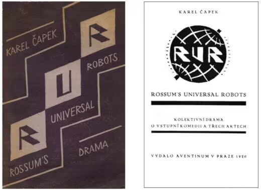
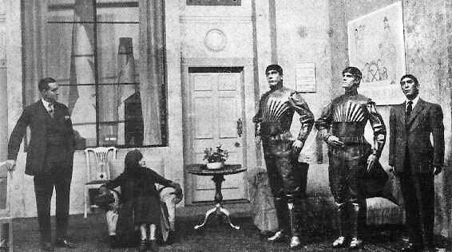
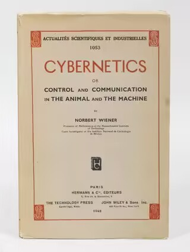
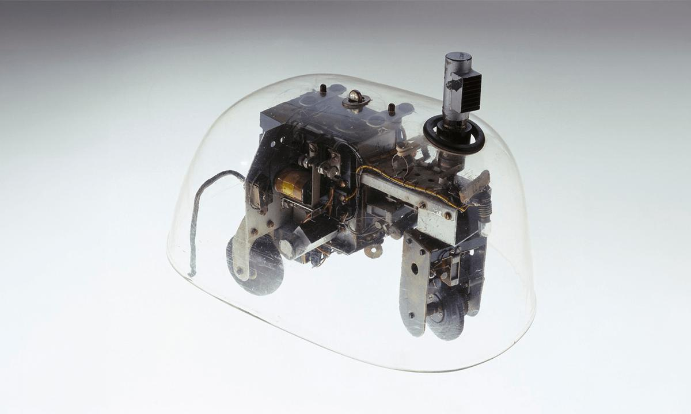
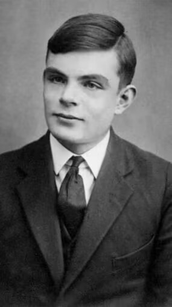
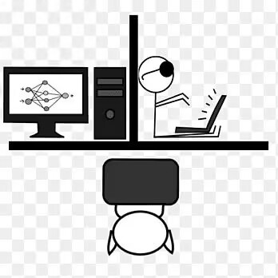
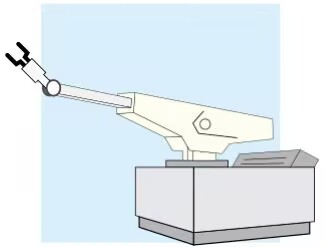
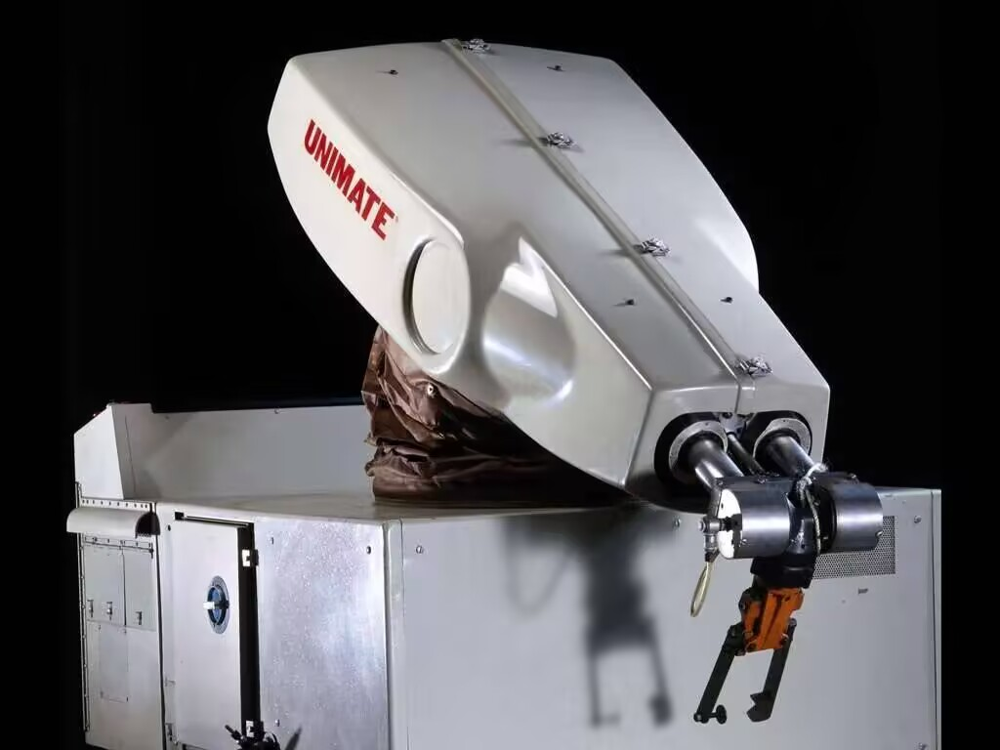

1921 — Robot一词诞生


捷克作家卡雷尔·恰佩克在科幻剧本《罗萨姆的万能机器人》（R.U.R.）中创造“Robot”一词，源自捷克语“Robota”（劳役、苦工），标志现代机器人概念正式诞生。
剧中机器人被设定为可替代人类劳动的人造人，引发全球对“机器人”的广泛讨论，成为现代机器人文化与技术的起点。
1940年代 — 控制论与机器人三定律

诺伯特·维纳创立控制论，提出“感知-反馈-执行”闭环，奠定机器人自动控制理论基础。
艾萨克·阿西莫夫在《我，机器人》中提出机器人三定律，建立机器人伦理规范，影响至今。
1948–1949 — 第一台自主机器人：乌龟机器人

英国科学家威廉·格雷·沃尔特制造“乌龟机器人”（Elsie/Elmer），具备趋光、避障、自主移动能力，是世界首台真正自主机器人。
它通过简单电路实现复杂行为，证明低复杂度系统可产生智能表现，为自主机器人研究开辟道路。
1950 — 图灵测试：机器智能的判定


阿兰·图灵发表《计算机器与智能》，提出图灵测试：若人类通过文字对话无法区分机器与人类，则机器具备智能。
该测试为人工智能与智能机器人设立首个可量化目标，成为机器智能研究的重要里程碑。
1954 — 第一台可编程工业机器人专利


乔治·德沃尔申请可编程机器人专利，发明Unimate，成为现代工业机器人的起点。
1961年Unimate投入通用汽车生产线，执行搬运、焊接等任务，开启工业机器人时代。